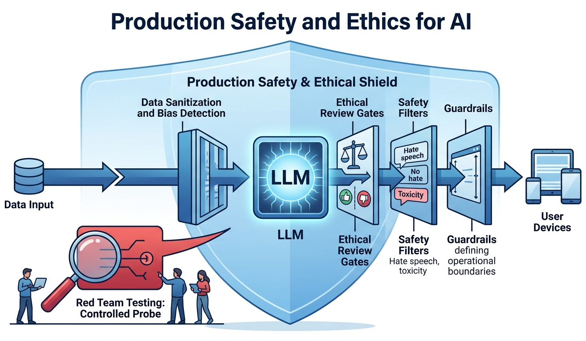

"With great power comes great responsibility. The same technology that can democratize access to knowledge can also amplify harm at unprecedented scale."
Sage AI Agent

Chapter Overview
With the production engineering foundations from Chapter 31 in place, this chapter tackles the safety, ethical, and regulatory dimensions of deploying LLMs at scale. It covers the OWASP Top 10 for LLMs, prompt injection defenses, hallucination detection and mitigation, bias measurement, model cards, and environmental impact.
Building on the alignment techniques covered in Chapter 17, the regulatory landscape (EU AI Act, GDPR, US executive orders) and enterprise governance frameworks (NIST AI RMF, ISO 42001) are examined alongside practical audit strategies. The chapter concludes with licensing, intellectual property, privacy, and the emerging field of machine unlearning, preparing the ground for the strategic and ROI considerations in Chapter 33.
As LLMs become embedded in high-stakes decisions, safety and ethics move from nice-to-have to regulatory requirements. This chapter covers bias detection, content filtering, red-teaming, and emerging AI regulations. It builds on the alignment techniques of Chapter 17 and applies to every system deployed in production.
Prerequisites
- Chapter 31: Production Engineering and Operations (deployment, guardrails, LLMOps)
- Chapter 11: Prompt Engineering (prompt design, structured outputs)
- Chapter 29: Evaluation and Observability (metrics, tracing, monitoring)
- Chapter 17: Alignment, RLHF, and DPO (alignment techniques)
Learning Objectives
- Defend against OWASP Top 10 LLM threats including prompt injection, jailbreaking, and data exfiltration
- Detect and mitigate hallucinations using self-consistency, citation verification, and constrained generation, complementing interpretability methods from Chapter 18
- Measure and reduce bias in LLM outputs through systematic auditing and model cards
- Navigate the EU AI Act, GDPR, and US regulatory frameworks for AI governance
- Implement enterprise risk governance using NIST AI RMF, ISO 42001, and SR 11-7 frameworks
- Understand model licensing taxonomies, IP ownership, and differential privacy for LLM training data
- Apply machine unlearning techniques for GDPR compliance, copyright removal, and safety alignment
Sections
- 32.1 LLM Security Threats OWASP Top 10 for LLMs, prompt injection, jailbreaking defenses, input sanitization, sandwich defense, output scanning, and PII redaction strategies.
- 32.2 Hallucination & Reliability Types of hallucination, detection methods (self-consistency, citation verification, NLI), mitigation strategies (RAG, constrained generation, confidence calibration), and abstention.
- 32.3 Bias, Fairness & Ethics Sources of bias in LLMs, measurement techniques, fairness metrics, model cards, datasheets for datasets, and environmental impact of large-scale training.
- 32.4 Regulation & Compliance EU AI Act risk tiers, GDPR requirements for AI, US executive orders, sector-specific regulations (HIPAA, finance, education), and building AI governance programs.
- 32.5 LLM Risk Governance & Audit Enterprise model inventory, risk classification frameworks, SR 11-7 model risk management, NIST AI RMF, ISO 42001, and audit trail implementation.
Under GDPR, individuals can request deletion of their personal data. But what happens when that data has been absorbed into the weights of a 70-billion-parameter model? You cannot simply search the parameters for "John Smith" and delete those neurons. This paradox gave rise to the field of machine unlearning, which Section 32.7 covers in detail. Early approaches were so aggressive they occasionally caused models to forget how to write grammatically correct English, proving that surgical forgetting in neural networks remains one of the hardest open problems in AI.
- 32.6 LLM Licensing, IP & Privacy Model license taxonomy, commercial use considerations, IP ownership of LLM outputs, training data copyright, anonymization techniques, and differential privacy.
- 32.7 Machine Unlearning Unlearning methods (gradient ascent, LOKA, task vectors), evaluation of forgetting quality, and GDPR/copyright/safety motivations for selective knowledge removal. Relates to alignment (Chapter 17).
- 32.8 Red Teaming Frameworks & LLM Security Testing Structured red teaming methodologies, automated tools (PyRIT, Garak), manual playbooks, adversarial prompt libraries, and CI/CD integration.
- 32.9 EU AI Act Compliance in Practice Risk classification for LLM applications, GPAI obligations, conformity assessment, automated compliance checking, and practical implementation checklists.
- 32.10 Automated Red Teaming as Benchmarked Science HarmBench, JailbreakBench, and garak for standardized red teaming evaluation. Attack taxonomies, refusal trade-offs, and building reproducible red team datasets.
- 32.11 Environmental Impact & Green AI Carbon footprint of LLM training, PUE and efficiency metrics, MoE and distillation as green alternatives, CodeCarbon tracking, the rebound effect, and EU AI Act environmental disclosure requirements.
- 32.12 Privacy Attacks & Differential Privacy for LLMs Training data extraction, membership inference attacks, DP-SGD with Opacus, privacy budget management, contextual integrity, PII detection, and defense-in-depth privacy strategies.
What's Next?
In the next chapter, Chapter 33: Strategy, Product and ROI, we shift from technical concerns to strategic ones: use case prioritization, build-vs-buy decisions, and ROI measurement.